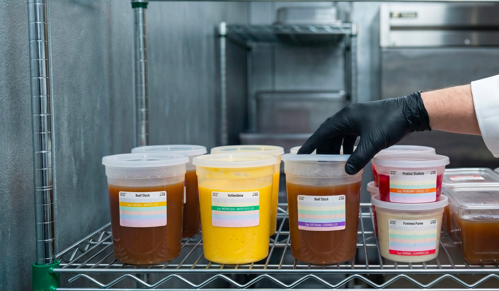
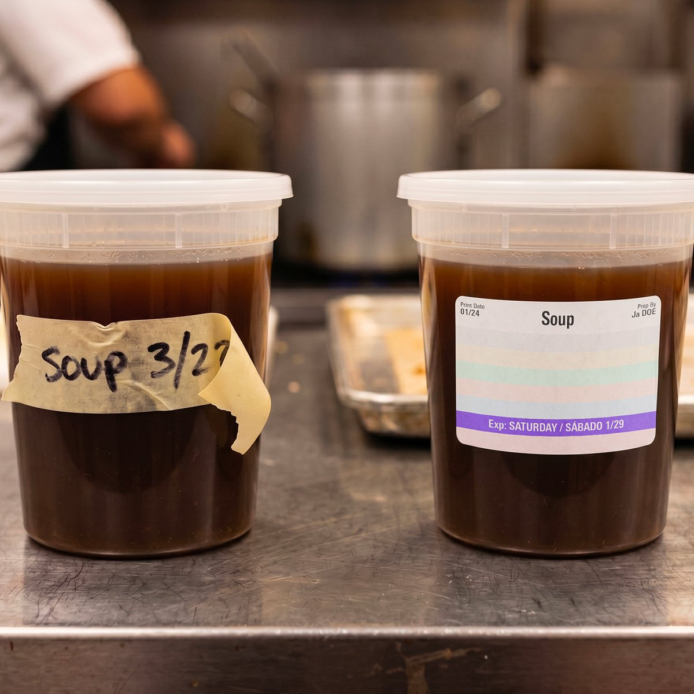
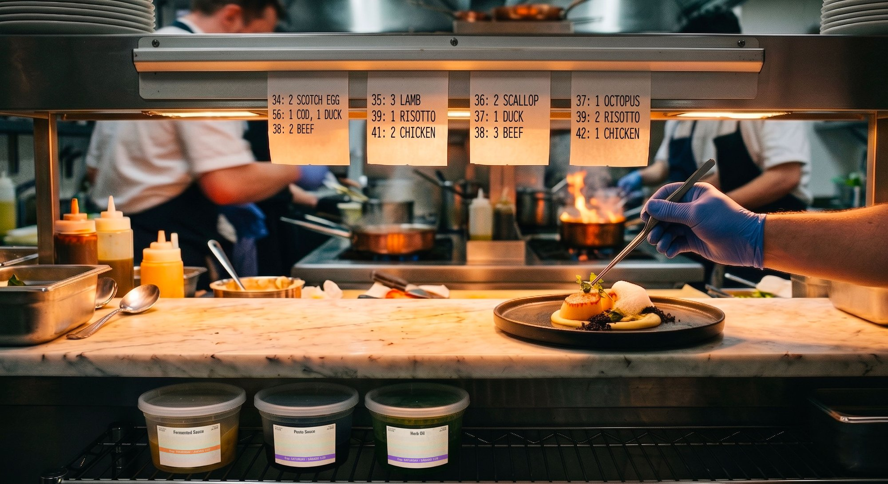
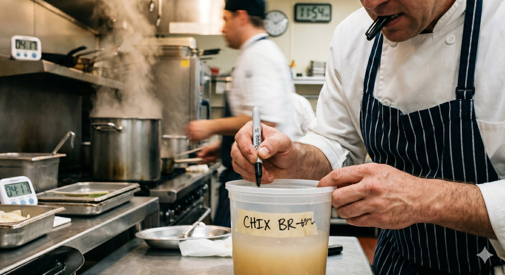
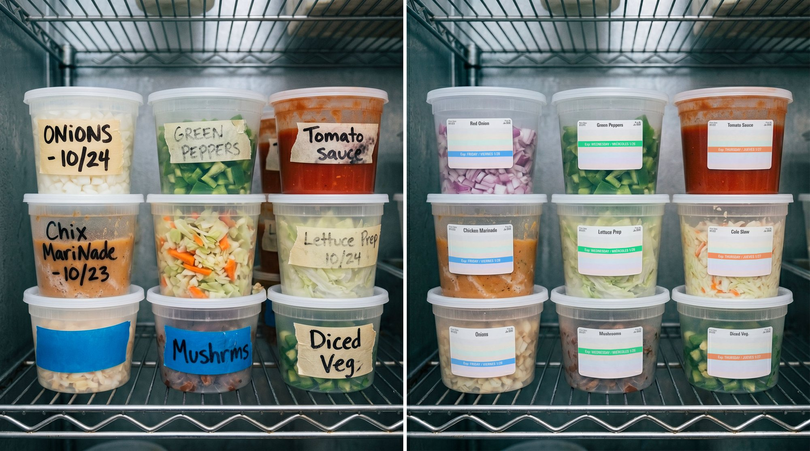

Standardized Food Safety Labels
Consistent, legible labels that make item identification, prep tracking, and discard dating easier across every station.

FreshDot helps fine dining and scratch kitchen teams standardize food labeling, improve compliance, and strengthen FIFO execution with a faster, easier, color-coded labeling system built for real kitchen operations.
In scratch kitchens, food moves fast. Prep is constant, stations overlap, and teams are balancing speed, quality, and safety at the same time. That is exactly when handwritten labels get skipped, dates become inconsistent, and FIFO starts depending on memory instead of a system.
FreshDot gives your team a simpler way to label correctly every time. With a standardized, easy-to-read, color-coded format, staff can apply labels quickly, see product status instantly, and make better use-first decisions throughout prep, storage, and service.
Explore solutions
Your labeling process should do more than satisfy policy. It should help kitchens run cleaner, safer, and more consistently across every shift and every location.
FreshDot is designed to improve execution where most systems fail:
From the Founders
“Helping hospitals safely deliver more than five million medications taught us something that applies to every kitchen we’ve ever stood in: frontline staff don’t fail at compliance because they don’t care. They fail when the system makes correct action slower than the workaround. We built FreshDot to fix that.”
Fox Holt CEO & Co-Founder, FreshDotFIFO
Stronger first-in, first-out execution starts with labels teams can interpret consistently—in the walk-in, on the line, and during closeout.
Less friction
Designed so correct labeling is the fastest path during service—not an extra chore deferred until “after the rush.”
FreshDot is designed for operations where labeling matters most—fine dining, chef-driven concepts, hotel kitchens, multi-unit scratch restaurants, commissaries, and other environments where premium ingredients and precise execution leave little room for inconsistency.
A practical labeling system aligned to how premium kitchens actually work.
Consistent, legible labels that make item identification, prep tracking, and discard dating easier across every station.
Give teams an instant visual cue for what is freshest, what should be used next, and what needs immediate attention.
Reduce missed labels and inconsistent practices by making correct labeling faster and easier during real service conditions.
Create a shared labeling standard across kitchens so leadership gets better execution and fewer process gaps.
Why FreshDot
Most labeling systems assume staff will slow down, write neatly, and remember every rule during busy service. FreshDot is built around reality: if the system is faster and easier, adoption goes up.
A clearer, standardized label format reduces variation between employees, shifts, and locations. Teams know what to do because the label system itself guides the behavior.
When staff can scan shelves and instantly understand priority, product gets used in the right order more often. That helps reduce avoidable discard tied to poor visibility and inconsistent rotation.
A structured rollout so labeling becomes part of the rhythm—not a parallel process.
We review your current labeling workflow, compliance pain points, kitchen layout, and where FIFO visibility breaks down.
We build a labeling system tailored to your operation, including format, color logic, use cases, and rollout plan across stations or locations.
We help your team measure adoption, identify friction points, and strengthen execution so labeling becomes a reliable part of daily operations.
Practical perspective on FIFO, compliance, and kitchen operations.

Rotation does not require extra steps on the line—it requires visibility that matches the pace of service.
Read more
Scratch kitchens aren’t being beaten by their team’s discipline. They’re being beaten by labeling systems built for someone else’s kitchen.
Read more
Inconsistency between kitchens doesn’t show up in any one location. It shows up as a slow, invisible tax across all of them.
Read moreLet’s discuss how FreshDot can help your team improve compliance, strengthen FIFO, and reduce avoidable food waste.